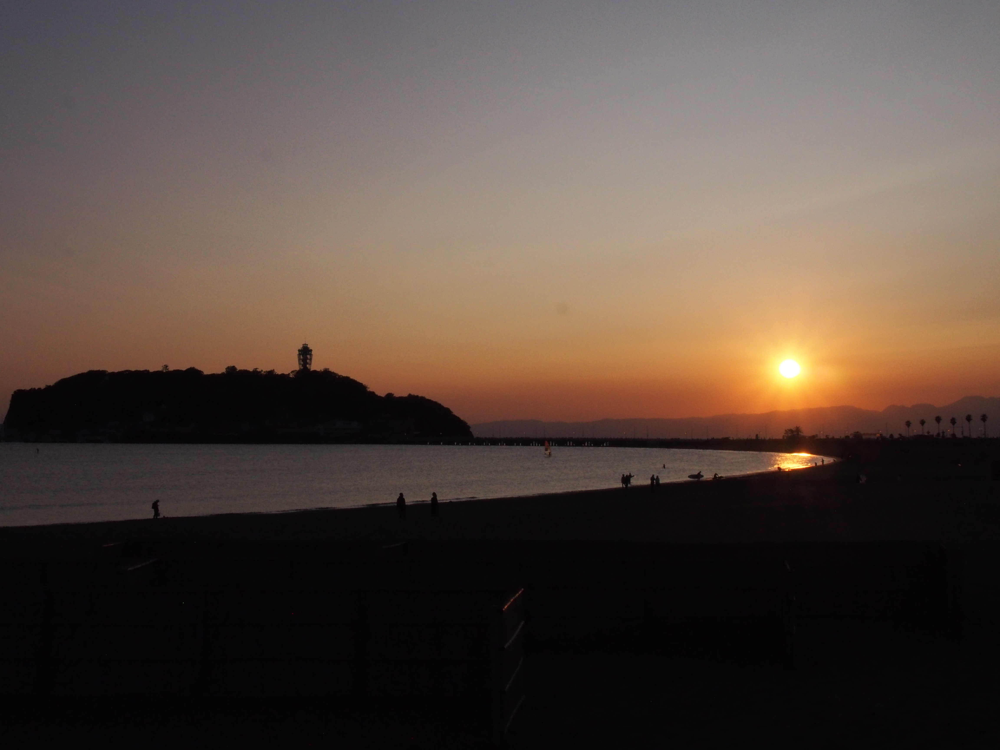
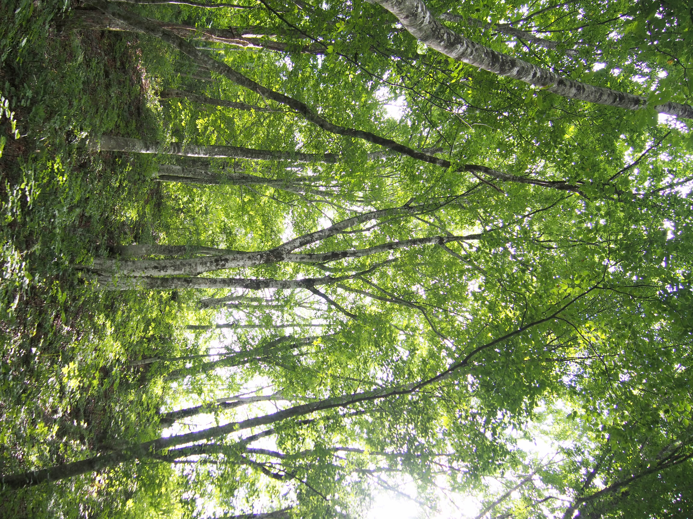
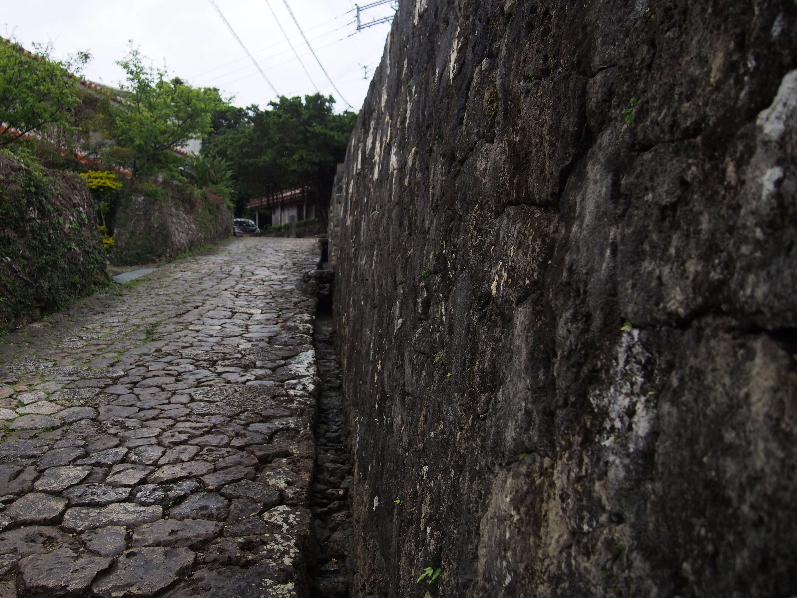
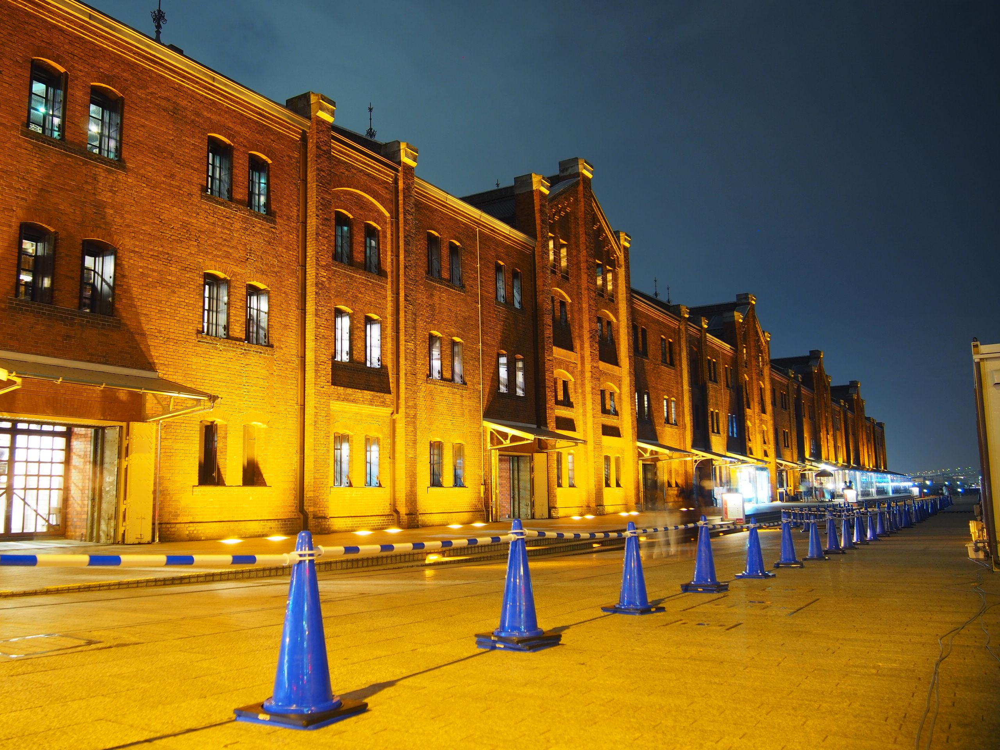
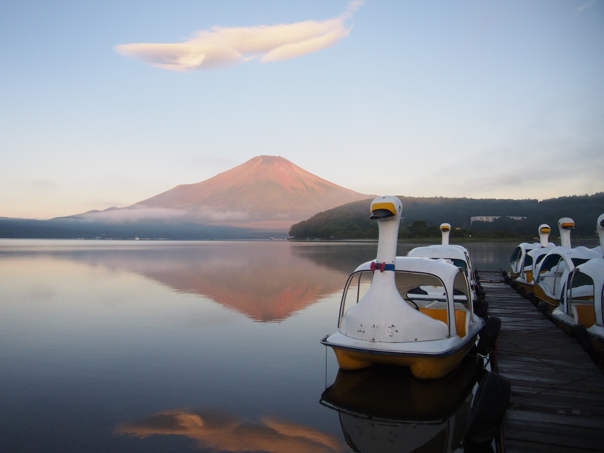
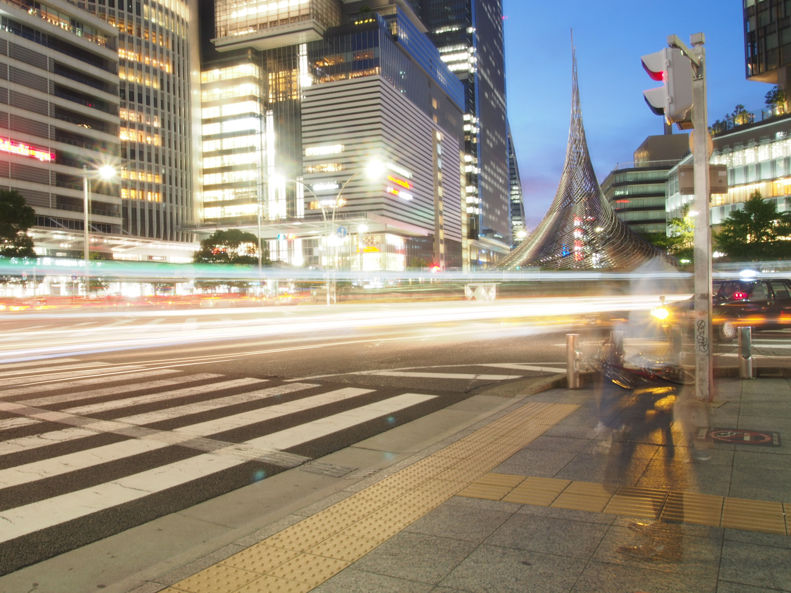
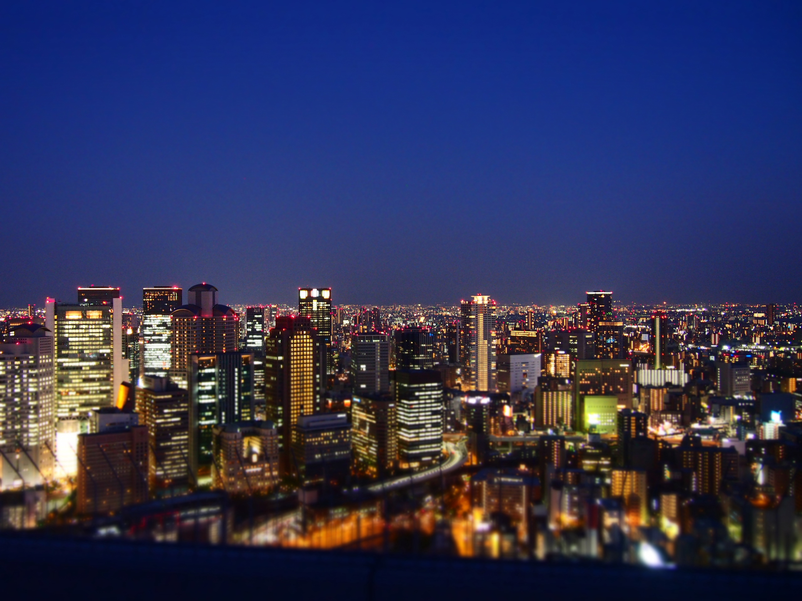
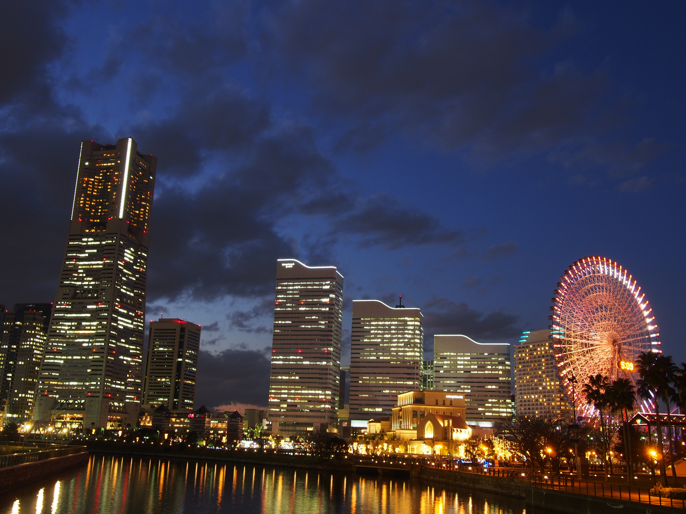

=====

小豆島オリーブ公園／2022年8月撮影 [設定] f/4 1/4000秒 ISO-640 12mm

南房総／2022年3月撮影 [設定] f/22 1/30秒 ISO-800 45mm

鹿苑寺金閣／2022年1月撮影 [設定] f/4 1/1250秒 ISO-200 25mm

伊香保温泉／2021年11月撮影 [設定] f/22 1/15秒 ISO-320 16mm

白川郷／2021年8月撮影 [設定] f/4 1/800秒 ISO-200 12mm

太陽の塔／2021年7月撮影 [設定] f/4 1/1600秒 ISO-200 28mm

舘山寺／2021年3月撮影 [設定] f/7.1 1/8000秒 ISO-4000 13mm

備中松山城／2020年11月撮影 [設定] f/4 1/3200秒 ISO-2500 45mm

高千穂峡／2020年11月撮影 [設定] f/4 1/640秒 ISO-800 37mm
江の島海岸／2020年10月撮影 [設定] f/22 1/1000秒 ISO-1250 22mm
白神山地／2019年9月撮影 [設定] f/3.5 1/320秒 ISO-800 14mm
首里金城町の石畳道／2019年3月撮影 [設定] f/4 1/500秒 ISO-1000 14mm
赤レンガ倉庫／2018年9月撮影 [設定] f/3.5 3.2秒 ISO-200 14mm
富士山@山中湖／2018年8月撮影 [設定] f/3.5 1/1250秒 ISO-1000 14mm
飛翔／2018年8月撮影 [設定] f/22 30秒 ISO-200 14mm
梅田スカイビル展望台／2018年8月撮影 [設定] f/3.6 1/8秒 ISO-1250 15mm
横浜@万国橋／2015年12月撮影 [設定] f/6.3 2秒 ISO-200 17mm